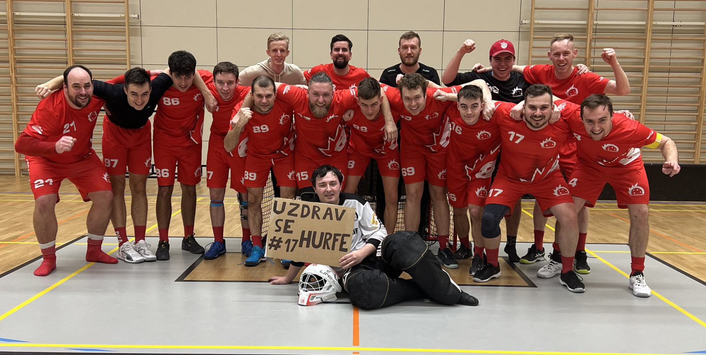
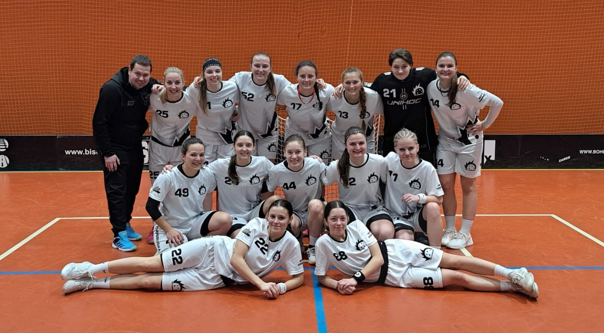

Muži A
Náš tým Dobrušky je pilířem našeho klubu. Skládá se ze zkušených odchovanců, které doplňují mladé naděje, kteří mají potenciál posunout tým do vyšších pater ligového žebříčku. Naši florbalisté jsou převážně z Dobrušky. Jsme skvělý tým s úžasným kolektivem a florbal je pro nás všechny vášní. Momentálně hrajeme v 4. nejvyšší lize v České republice, ve skupině Divize D, a každou sezónu absolvujeme 22 zápasů. Pokud se nám podaří umístit se na pátém místě v tabulce, můžeme bojovat o postup do vyšší ligy. Pro více informací o výkonech našeho týmu v sezóně 2023/2024 si prohlédněte statistiky níže.
Brankáři:
- 1. Pavel Novotný
- 69. Adam Procházka
Hráči:
- 4. Tomáš Novák
- 6. Martin Svoboda
- 7. Michal Král
- 9. Jakub Novotný
- 14. Petr Vlček
- 17. David Marek
- 21. Lukáš Procházka
- 28. Jan Malý
- 32. Jakub Novák
- 36. Pavel Král
- 48. Martin Marek
- 55. Jiří Novák
- 68. Marek Svoboda
- 73. Adam Král
- 78. Petr Novotný
- 88. David Procházka
- 94. Tomáš Malý
- 97. Jakub Svoboda
- 99. Lukáš Novák
Ženy
Tým žen patří k hlavní ozdobou a chválou klubu. Skládá se ze zkušených hráček, které si společně prošli opravdu vším. Dalé je tým doplněný o mladší hráčky, které se rozhodně neztratí. Momentálně ženy usilují o postup do nejvyšší soutěže. Základní část zvládly skvěle, když vyhrály všech svých 22 zápasů a v Play-off se jim zatím moc daří.Pro více informací o výkonech našeho týmu v sezóně 2023/2024 si prohlédněte statistiky níže.
Brankářky:
- 1. Barbora Nová
- 69. Veronika Procházková
Hráčky:
- 4. Anna Novotná
- 6. Tereza Svobodová
- 7. Michaela Králová
- 9. Lucie Novotná
- 14. Eva Vlčková
- 17. Veronika Marková
- 21. Karolína Procházková
- 28. Klára Malá
- 32. Lenka Novotná
- 36. Alena Králová
- 48. Kateřina Marková
- 55. Monika Novotná
- 68. Iveta Svobodová
- 73. Zuzana Králová
- 78. Petra Nová
- 88. Denisa Procházková
- 94. Alena Malá
- 97. Jana Svobodová
- 99. Nikola Nová